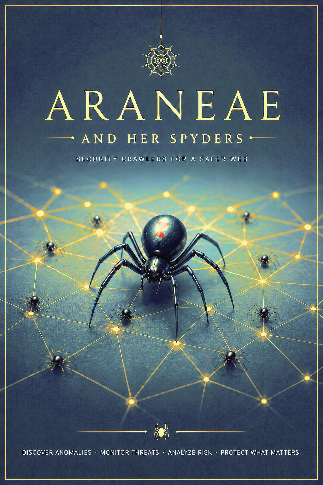
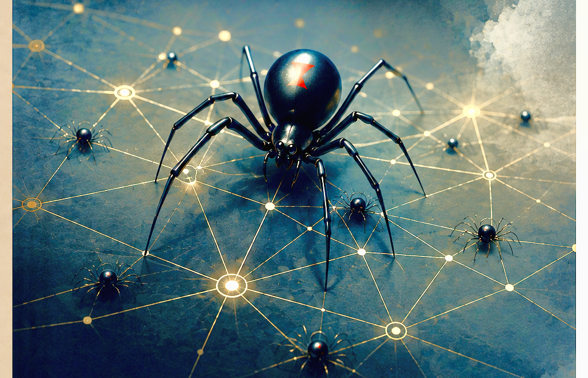
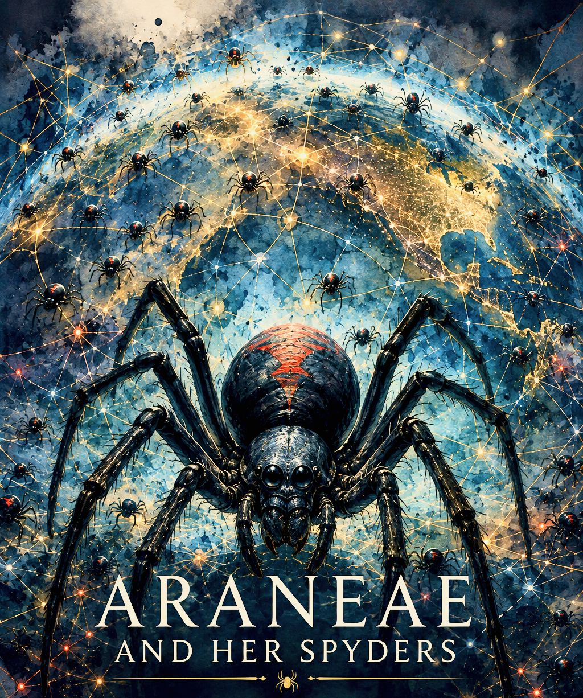

Sentinel
Watches public sites, uptime, redirects, scripts, assets, and known-good surface changes.


Araneae coordinates a family of defensive observation agents called Spyders. Each child has a narrow purpose, explicit scope, health state, and reporting route. They are designed to notice meaningful changes across authorized sites, repositories, Beta surfaces, recovery references, and ecosystem directories.
Araneae does not replace MAVRIC or CODalis. Her family gathers and correlates evidence; MAVRIC governs security events, while CODalis performs deeper technical diagnosis when something deserves investigation.
Every Spyder begins with observation authority only. New children inherit Araneae as their parent identity, never unrestricted control over the systems they observe.
Watches public sites, uptime, redirects, scripts, assets, and known-good surface changes.
Observes authorized repositories, release states, workflow changes, and continuity references.
Correlates human Beta reports with technical observations and recurring failure patterns.
Tracks recovery readiness, backup references, verification state, and known-good continuity signals.
Compares ecosystem directory records with live public references and continuity snapshots.
No single scanner protects an ecosystem. Araneae is one observation layer inside a broader continuity and security model.

These values describe the current design contract. A future protected runtime can publish sanitized live status here without exposing private CORE material, credentials, or control channels.
Araneae Desktop brings the diagnostic side of the protective web onto the computer itself, with readable health reports, graduated scan depths, maintenance scheduling, and a direct Beta feedback doorway.
The current macOS Beta is designed as a read-only diagnostic companion. It observes system health signals and creates local reports without automatically changing, deleting, quarantining, or repairing files.
Finding a site, repository, redirect, or service never automatically expands a Spyder's permitted scope.
Spyder children inherit identity lineage from Araneae, not unrestricted operational permissions.
Unexpected change becomes something to investigate, not an automatic declaration of malware or compromise.
Passwords, MFA secrets, private keys, recovery secrets, and raw private CORE material never belong in this public surface.